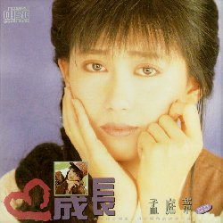
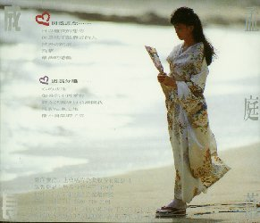

| 前のＣＤ | タイトル一覧 | 次のＣＤ |
| １９９０年１１月５日 | 成長 （女也）曾經是個（齢－令＋此）著頑皮嘴角的快楽Ｙ頭 | ＳＣＤ－６６３９ |
|---|---|---|
|  | 上格唱片(SANGER RECORD & TAPE CO., LTD.） | |
| ||
|  |
このアルバムの歌詞カードにＹＡＹＡの日記風のちょっとした
書き込みが、本人の筆跡（？）で、書いてありました。 読めないのが悲しい！ このアルバムまでは、髪の毛が長くアイドルしてました！ 歌手名欄にも「孟庭葦」の側に「亞亞」と書いてあります。 ＣＤ裏面の羽子板を持って、日本の着物を着ているのは、 私の好みでは、有りません。 ただ、胸元が少し見えていて、着物が風に煽られているのは、 これは、これなりに物語的で、楽しめるかな？とも思います。 私の好みでは、日本の着物は、ピシッと着てほしいです。 | |